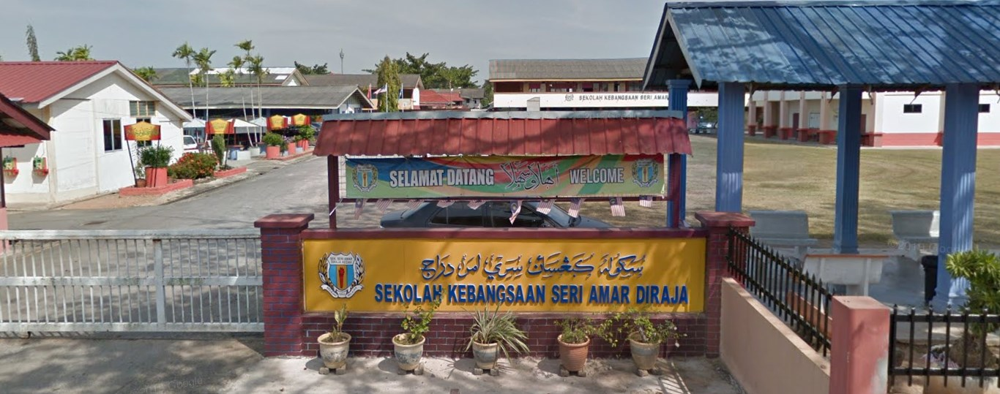
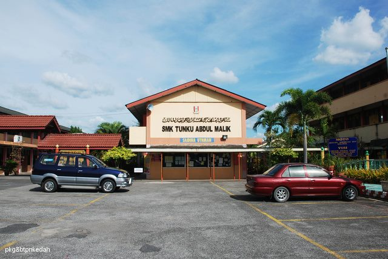
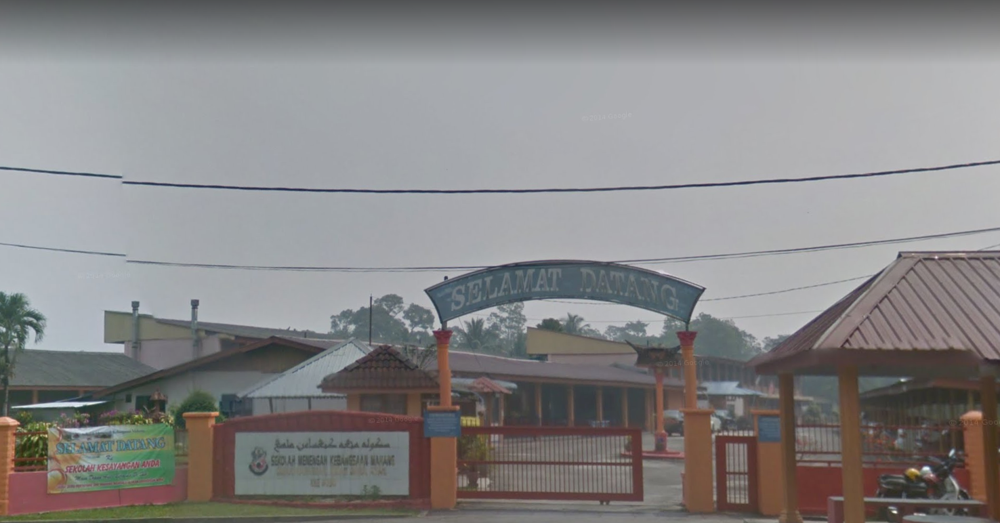

PRIMARY SCHOOL.

- SEKOLAH KEBANGSAAN SERI AMAR DIRAJA (SKSADR)
- From 2009 - 2014
- Located at Alor Merah, Alor Setar, Kedah
- Since standard 1 until I finished my UPSR.
SECONDARY SCHOOL(S).

- SEKOLAH MENENGAH KEBANGSAAN TUNKU ABDUL MALIK (SMKTAM)
- From 2015
- Located at Alor Merah, Alor Setar, Kedah
- I've study there for only 1 year then go to another school near my hometown Selama, Perak because of I did not live at Alor Setar anymore after the death of my dad.

- SEKOLAH MENENGAH KEBANGSAAN MAHANG (SMKM)
- From 2016 until 2019
- Located at Mahang, Karangan, Kedah
- I've finished my PT3 and SPM in this school
TERTIARY EDUCATION.

- UNIVERSITI TEKNOLOGI MARA (UiTM)
- From 2021 until 2023
- Located at Merbok, Kedah
- Doing my Diploma in Library Management and right now I am a final year student